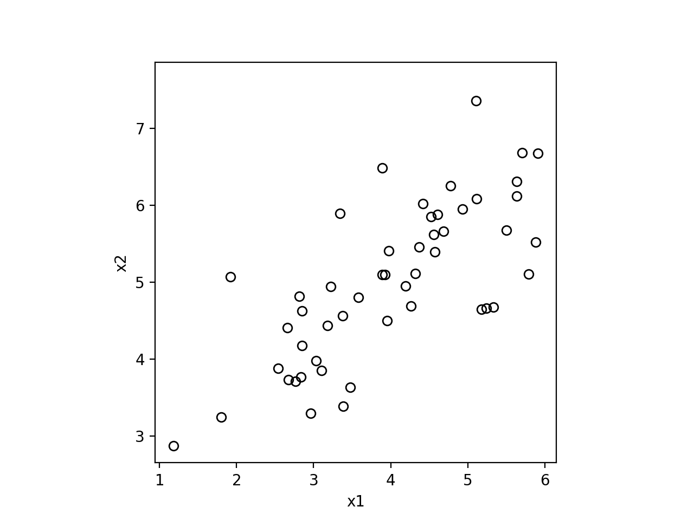
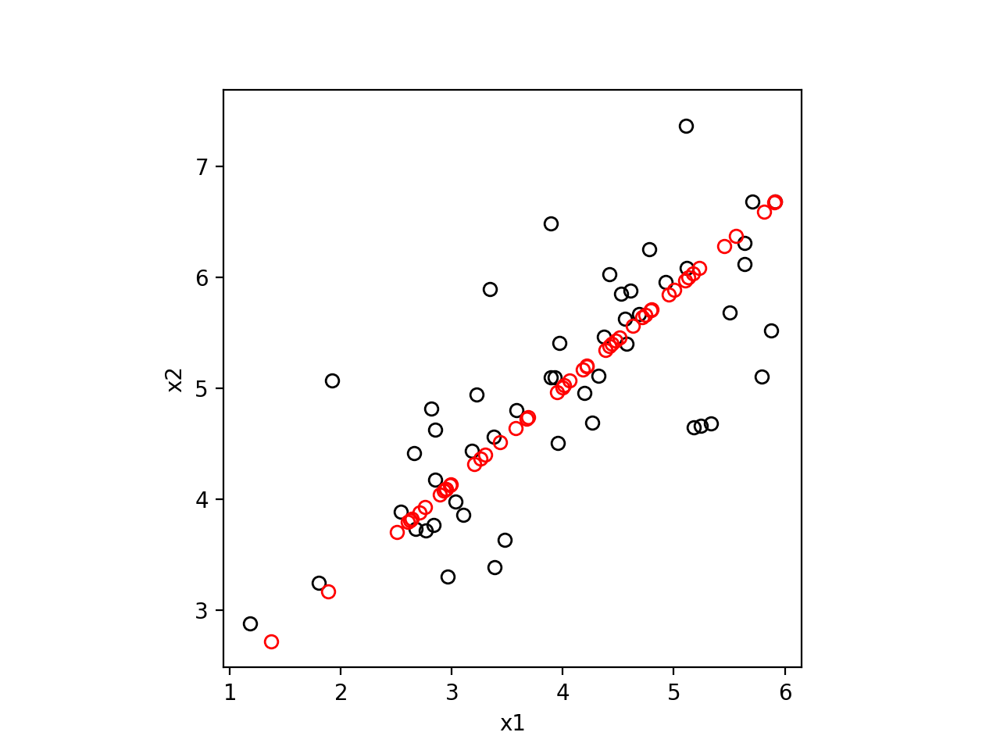
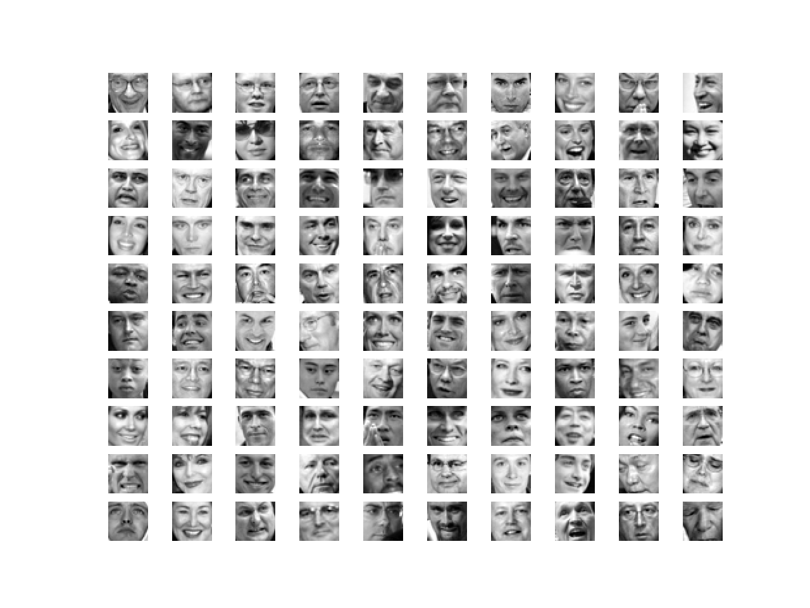
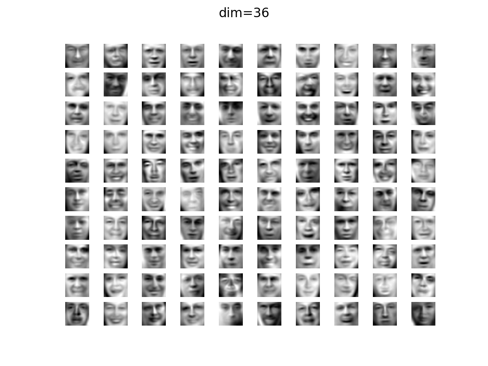
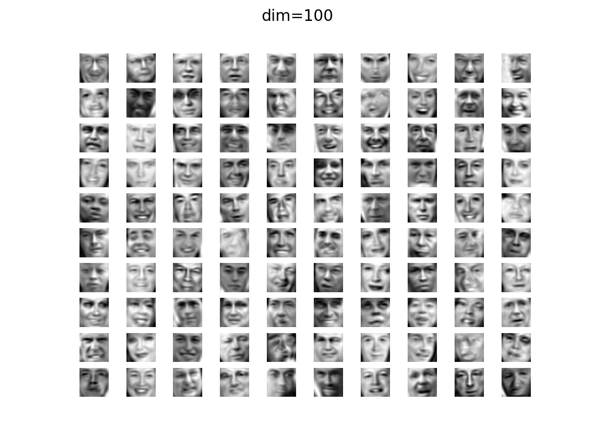

[吴恩达机器学习]12·主成分分析
吴恩达机器学习系列课程：https://www.bilibili.com/video/BV164411b7dx
参考文章：https://www.zhihu.com/question/41120789/answer/481966094
数据降维
我们的数据特征常常包含众多维度，但它们中的有些维度其实没有存在的必要。最极端的情况就是某一维度是其他若干维度的线性组合，那么这一维度就完全可以丢掉；但现实不会这么精准，如果某一维度是其他若干维度的线性组合加上微小的扰动，我们其实也可以将其丢掉。这就是数据降维。

数据降维有众多算法可以完成，主成分分析即是其中之一。
主成分分析
主成分分析（Principal Component Analysis）的基本思想是：假设原始数据的特征有 \(n\) 维，我们想将其缩减到 \(k\) 维，那么我们只需要在原来的 \(n\) 维空间中找到一个 \(k\) 维的子空间，使得所有数据到这个子空间的距离平方和最小；此时，原数据在这个子空间上的投影就是我们新的 \(k\) 维的数据。
数学推导
为方便，我们首先将数据中心化，即使得数据的平均值在原点处。一个获得所需要的 \(k\) 维子空间的简单方式是：找到一个合适的 \(n\) 维空间，直接选取前 \(k\) 维作为子空间。具体而言，对于一个数据点 \(x=\begin{bmatrix}x_1\\x_2\\\vdots\\x_n\end{bmatrix}\in\mathbb R^n\)，设我们要找的 \(n\) 维空间的规范正交基为 \(u_1,u_2,\ldots,u_n\)，则 \(x\) 在其中的新坐标为： \[ y_j=x\cdot u_j=x_1u_{j1}+x_2u_{j2}+\cdots+x_nu_{jn} \] 它到前 \(k\) 维形成的子空间（即以 \(u_1,u_2,\ldots,u_k\) 为基底的子空间）的距离之平方为： \[ {y_{k+1}}^2+{y_{k+2}}^2+\cdots+{y_n}^2 \] 假设我们有 \(m\) 个数据 \(x^{(1)},x^{(2)},\ldots,x^{(m)}\)，于是我们的优化目标为： \[ \min \sum_{i=1}^m {y^{(i)}_{k+1}}^2+{y^{(i)}_{k+2}}^2+\cdots+{y^{(i)}_{n}}^2 \] 又由于在不同的基下 \({||x||}^2\) 都是一个定值，于是最小化上述距离等价于： \[ \max \sum_{i=1}^m{y^{(i)}_1}^2+{y^{(i)}_2}^2+\cdots+{y^{(i)}_k}^2 \] 其充分条件为： \[ \max \sum_{i=1}^m {y_r^{(i)}}^2,\quad r=1,2,\ldots,k \] 这就是我们要解决的问题。
由于 \[ \begin{align} \sum_{i=1}^m{y^{(i)}_r}^2&=\sum_{i=1}^m(x^{(i)}\cdot u_r)^2\\ &=\sum_{i=1}^m\left(u_r^Tx^{(i)}\right)\left({x^{(i)}}^Tu_r\right)\\ &=u_r^T\left(\sum_{i=1}^mx^{(i)}{x^{(i)}}^T\right) u_r \end{align} \] 这是一个正定二次型，\(\sum\limits_{i=1}^mx^{(i)}{x^{(i)}}^T\) 是一个正定矩阵，可以进行奇异值分解： \[ \sum_{i=1}^mx^{(i)}{x^{(i)}}^T=U\Sigma U^T \] 其中，\(U\) 是正交矩阵，\(\Sigma\) 是对角矩阵 \(\begin{bmatrix}\sigma_1&\cdots&0\\\vdots&\ddots&\vdots\\0&\cdots&\sigma_n\end{bmatrix}\)，\(\sigma_1,\ldots,\sigma_n\) 是奇异值，\(\sigma_1>\cdots>\sigma_n\).
令 \(v_r=U^Tu_r\)，由于 \(U\) 正交，所以 \(v_r\) 也是单位向量，代回得到： \[ \begin{align} \sum_{i=1}^m{y^{(i)}_r}^2&=u_r^TU\Sigma U^Tu_r\\ &=(U^T u_r)^T\Sigma(U^Tu_r)\\ &=v_r^T\Sigma v_r\\ &=\sigma_1v_{r1}^2+\sigma_2v_{r2}^2+\cdots+\sigma_nv_{rn}^2 \end{align} \] 所以我们的优化目标变成了： \[ \begin{align} &\max\sum_{i=1}^n\sigma_iv_{ri}^2\\ &\text{s.t.}\begin{cases}\sum\limits_{i=1}^nv_{ri}^2=1\\\sigma_1>\cdots>\sigma_n\end{cases} \end{align} \] 很显然，它的解是：\(v_{r1}=1,v_{r2}=\cdots=v_{rn}=0\)，即 \(v_r=\begin{bmatrix}1\\0\\\vdots\\0\end{bmatrix}\)。又由于 \(u_r=Uv_r\)，所以我们要找的 \(n\) 维空间的各个基向量就是矩阵 \(\sum\limits_{i=1}^mx^{(i)}{x^{(i)}}^T\) 的各个奇异值对应的奇异向量，我们要降维到的 \(k\) 维子空间的各个基向量就是前 \(k\) 个奇异向量，对原来的数据进行基变换，就得到了降维后的数据。
步骤总结
总结一下，主成分分析的推导过程稍显复杂，但是它的实现很简单，主要是以下步骤：
计算矩阵 \(\sum\limits_{i=1}^mx^{(i)}{x^{(i)}}^T\)；
更简单的表达是：设矩阵 \(X=\begin{bmatrix}{x^{(1)}}^T\\{x^{(2)}}^T\\\vdots\\{x^{(m)}}^T\end{bmatrix}\) 为数据集，那么计算矩阵 \(X^TX\) 即可。
进行奇异值分解，得到奇异向量；
选取前 \(k\) 个奇异向量作为降维后的空间的基向量，构成基变换矩阵 \(C\)；
对于原数据 \(x\)，取 \(z=C^Tx\) 为其降维后的数据。
更简单的表达是：取 \(Z=XC\)，则 \(Z\) 是降维后的数据集。
主成分数量的选择
那么在实践中，我们到底选择多大的 \(k\) 值比较好呢？对此，我们定义一个平均误差为： \[ \frac{1}{m}\sum_{i=1}^m||x^{(i)}-x_\text{approx}^{(i)}||^2 \] 其中，\(x_\text{approx}^{(i)}\) 表示数据 \(x^{(i)}\) 在我们找到的 \(k\) 维子空间上的投影。再定义一个总方差为： \[ \frac{1}{m}\sum_{i=1}^m||x^{(i)}||^2 \] 则一般的，我们会选择最小的 \(k\) 使得： \[ \frac{\frac{1}{m}\sum\limits_{i=1}^m||x^{(i)}-x_\text{approx}^{(i)}||^2}{\frac{1}{m}\sum\limits_{i=1}^m||x^{(i)}||^2}\leqslant 0.01 \] 并称之为「\(99\%\) 的方差得以保留」。
这个式子看起来并不好计算，但事实上，借助我们的奇异值，可以证明，对于给定的 \(k\)： \[ \frac{\frac{1}{m}\sum\limits_{i=1}^m||x^{(i)}-x_\text{approx}^{(i)}||^2}{\frac{1}{m}\sum\limits_{i=1}^m||x^{(i)}||^2}=1-\frac{\sum\limits_{i=1}^k\sigma_k}{\sum\limits_{i=1}^n\sigma_i} \] 这就好算了。
实现
二维压缩为一维
二维平面上的原始数据：

主成分分析代码：
1 | |
得到映射的点：

人脸特征压缩
我们给出了 \(5000\) 张人脸照片，每张照片含有 \(32\times32\) 的灰度像素，形成维度为 \(1024\) 的向量作为其特征。前 \(100\) 张照片如图所示：

现在将其压缩为 \(\text{dim}={36,100}\) 维的数据，恢复后结果如下：

